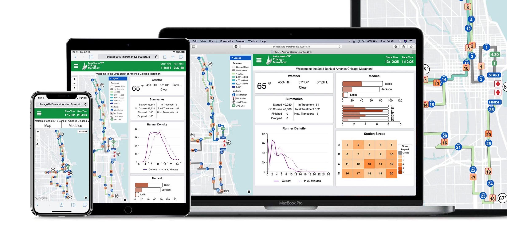

Running a marathon in 60 seconds: a timelapse of the system in action at the 2017 Chicago Marathon.
Marathon Data Viz System
Keeping Runners Safe
I am part of a small group of students at Northwestern that develops and deploys the DVS. The DVS tracks the progress and medical information of thousands of runners, keeping race officials stationed at forward command tents informed about the status and well-being of participants.
On race day, it’s used by medical professionals, public safety officials, federal government agencies, and race organizers. It allows them to monitor race progress and safety on their phones, tablets, laptops, and on large displays in forward command.
The system works across phones, tablets, laptops, and the large monitors in forward command.
Where it’s used
The system is currently in use across four events, keeping over 100,000 runners from around the world safe every year:
- Bank of America Chicago Marathon (45,000+ runners)
- Chevron Houston Marathon (10,000+ runners)
- Aramco Houston Half Marathon (15,000+ runners)
- Bank of America Shamrock Shuffle (30,000+ runners)

Our system is part of a massive wall of displays in forward command, shown here at the 2018 Chicago Marathon (sensitive info blurred).
Developing and deploying the system
During the past two years, I’ve helped transition the DVS to a responsive, mobile-friendly web app with new features and an improved design.
My biggest contribution was rewriting and redesigning the dynamic course map implementation that displays runner density, medical information, GPS-tracked runners, weather, emergencies, and more. I built the map using the Mapbox GL JS API.
Through user testing and collaboration with Northwestern data visualization researchers at the Visual Cognition Lab, I optimized the design for rapid data absorption.
I also spend much of my time on the project facilitating communication between our team and race officials, ensuring we meet their needs when building the system. I am on site during race days, deploying and operating the live system.
My redesign of the dynamic map display
Evolution of the system over the years; from a whiteboard to a responsive web app.
Before the DVS, race officials used a whiteboard to keep track of critical runner and medical information, a solution that was messy, hard to update, and of limited access. The first DVS team created a digital solution, which was continuously refined over the years. But the team I joined worked hard to make it as accessible, functional, and beautiful as possible.
Awards and publications
In April 2018, our system won first place in the INFORMS Innovative Applications in Analytics Award. We competed against other finalists at the 2018 INFORMS Business Analytics Conference in Baltimore, including IBM, Macy’s, BNSF, and Schneider.
Our work will be published in an upcoming edition of the operations research journal Interfaces.
Citation:
Mehmet Başdere, Gabriel Caniglia, Charles Collar, Christian Rozolis, George Chiampas, Michael Nishi, and Karen Smilowitz. SAFE: A Comprehensive Data Visualization System. Forthcoming 2019 in Interfaces.
The team (I’m in red) featured in Northwestern Engineering Magazine
In the News
- Northwestern: Marathon Optimization Tool Wins INFORMS Business Analytics Prize
- 2018 INFORMS Business Analytics Conference: SAFE (Situational Awareness for Events): A Data Visualization System
- Northwestern: Engineers Optimize Marathon Volunteers
- Newsweek: How the Chicago Marathon Will Keep Track of 1.7 Million People
- Runner’s World: Make Your Race Fantastic
- Chicago Tribune: How a real-time simulation will keep the Chicago Marathon on track
- Chicago Athlete Magazine: Data and the Bank of America Chicago Marathon